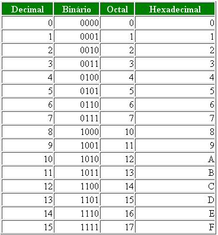

CONVERSÕES
Conversão de Decimal para Octal
- Divida o número decimal por 8.
- Anote o resto da divisão como o último dígito do número octal.
- Divida o quociente da divisão anterior por 8 novamente.
- Anote o resto da divisão como o próximo dígito do número octal, à esquerda do dígito que acabou de
escrever.
- Repita o processo até que o quociente da divisão se torne zero.
Exemplo
187 / 8 = 23, resto 3
23 / 8 = 2, resto 7
2 / 8 = 0, resto 2
Portanto, o número decimal 187 é igual a 273 em octal.
Conversão de Octal para Decimal
Para converter um número octal em decimal, você pode usar o método de multiplicação sucessiva,
onde cada dígito do número octal é multiplicado pelo valor de 8 elevado à potência correspondente ao seu
local de valor.
Exemplo
Vamos converter o número octal 345 em decimal:
3 x 8² + 4 x 8¹ + 5 x 8⁰ = 3 x 64 + 4 x 8 + 5 x 1 = 192 + 32 + 5 = 229
Portanto, o número octal 345 é igual a 229 em decimal.
Binário para Octal
Para converter um número binário em octal, é necessário dividi-lo em grupos de três dígitos da direita para a
esquerda,
preenchendo com zeros à esquerda se necessário para completar o último grupo de três dígitos.
Exemplo
O número binário 10111010, depois de dividilos em grupos de três ele ficará assim 10 111 010,
e dps de convertidos na tabela você vera que o número octal é 272.
OBS:A tabela ta no final da pagina.
Octal para Binário
Pra tranformar o octal em binário é basicamnete a mesma coisa que a conversão do binário para o octal é so você
inverter.
Exemplo
Imagine o número 657 conforme a tabela 6=110 5=101 7=111, ou seja o numero 657 em binários é 110101111.
Hexadecimal para Decimal
É a mesma coisa que na conversão octal para decimal a ÚNICA coisa que muda é que em vez de fazer por x8 se faz
x16.
Exemplo
Vamos converter o número Hexadecimal 3F2.
(3 x 16^2) + (F x 16^1) + (2 x 16^0)
(3 x 256) + (15 x 16) + (2 x 1)
768 + 240 + 2
1010
Hexadecimal para Binário
Para cada digito hexadecimal são necessarios 4 digitos para representa-lo em binário, para converter é so usar
a tabela.
Exemplo
Vamos converter o número hexadecimal "AB" para binário;
A=1010 e B=1011;
10101011
TABELA

VOLTAR